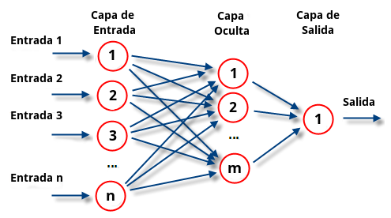
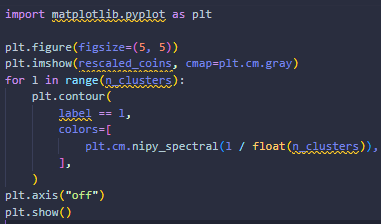

Las redes neuronales son un método de cálculo que busca imitar el funcionamiento de las neuronas en un organismo. De esa inspiración extrae un modelo de unidades conectadas entre sí, que generan, transmiten y refuerzan conceptos para llegar a conclusiones determinadas y consolidarlas como conocimiento. Las redes neuronales en inteligencia artificial no hacen más que trasladar el funcionamiento biológico al ámbito matemático. Del mismo modo que, al aprender un idioma, nuestro cerebro va averiguando patrones en la gramática, un ordenador procesa unos datos concretos y descubre el parámetro más adecuado para procesarlos Los modelos de redes neuronales sirven para que los ordenadores encuentren parámetros y patrones adecuados mediante un entrenamiento. Éste consiste en alimentar el ordenador con datos para que determine criterios válidos de análisis y los aplique
El metodo de Ward es un procedimiento jerarquico en el cual, en cada etapa, se unen los dos clusters para los cuales se tenga el menor incremento en el valor total de la suma de los cuadrados de las diferencias, dentro de cada cluster, de cada individuo al centroide del cluster.
Lo primero que se hace es generar los datos
Cambie su tamaño al 20 % del tamaño original para acelerar el procesamiento. La aplicación de un filtro gaussiano para suavizar antes de reducir la escala reduce los artefactos de alias.
El término clustering hace referencia a un amplio abanico de técnicas cuya finalidad es encontrar patrones o grupos (clusters) dentro de un conjunto de observaciones. Las particiones se establecen de forma que, las observaciones que están dentro de un mismo grupo, son similares entre ellas y distintas a las observaciones de otros grupos. Se trata de un método de aprendizaje no supervisado (unsupervised), ya que el proceso no tiene en cuenta a qué grupo pertenece realmente cada observación (si es que existe tal información)
El filtro gaussiano permite disminuir el ruido de una imagen a partir de la premisa que la información del pixel de interés se encuentra repartida en los pixeles vecinos y que además los vecinos más cercanos contienen más información que los vecinos lejanos. Este tipo de filtro también tiene el problema de difuminado de los bordes.
Definir la estructura de los datos. Los pixeles están conectados a sus neighbors
La biblioteca time contiene una serie de funciones relacionadas con la medición del tiempo La función time() devuelve el número de segundos transcurridos desde el origen de los tiempos del sistema, que suele ser el 1 de enero de 1970. El resultado es un número decimal, pero la precisión en los decimales depende del ordenador.
La librería de python scikit-learn ofrece implementaciones eficientes de varias técnicas de agrupamiento. Esta figura muestra cómo distintos algoritmos se comportan con varios tipos de datos. Scikit-learn ofrece la siguiente tabla que nos ayuda a comparar los diferentes algoritmos de clustering
al ejecutar el codigo obtenemos como resultado de salida lo siguiente
Trazar los resultados en una imagen. El agrupamiento aglomerativo es capaz de segmentar cada moneda; sin embargo, hemos tenido que usar un n_cluster más grande que el número de monedas porque la segmentación encuentra un valor grande en el fondo
Matplotlib es una biblioteca para la generación de gráficos a partir de datos contenidos en listas o arrays en el lenguaje de programación Python y su extensión matemática NumPy. Proporciona una API, pylab, diseñada para recordar a la de MATLAB.
Podemos usar el matplotlib.pyplot.figure() para crear una nueva figura y establecer valores de varios parámetros para personalizar el gráfico como figsize, dpi, y mucho más
La función contour() en el módulo pyplot de la biblioteca matplotlib se usa para trazar contornos
La función implementada por cmap = plt.cm.Spectral es dar un color al punto cuya etiqueta es 1, y otro color al punto cuya etiqueta es 0
El comando plt.axis('off') oculta el eje, pero obtenemos espacios en blanco alrededor del borde de la imagen mientras la guardamos
La función show() en el módulo pyplot de la biblioteca matplotlib se usa para mostrar todas las figuras.
